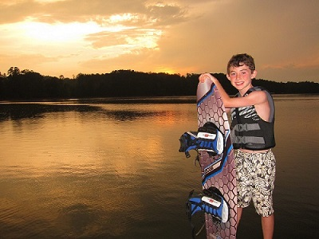
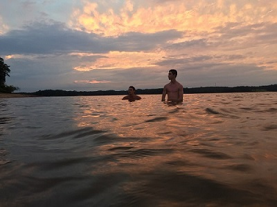
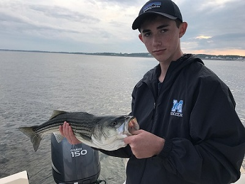

Colton was born on July 19th, 2002 in Greenville, SC. He has lived in Greenville his whole life and has moved houses twice. Colton went to Bells Crossing elemetary until he graduated fifth grade and went to Langston Charter Middle School. At a young age he found he had a love for soccer and began to play soccer for CESA. He also began to play sports like hockey, soccer, basketball, and tae kwon do.
Colton has four siblings. He has one older brother named Blake and three younger siblings. His younger brothers name is Bryson and his two younger sisters are named Brynn and Ashlyn. His two younger sisters are adopted from Charleston and China. He also has a mother and father who are named Leslie and Chris.
Currently, Colton is playing soccer at J.L Mann and United FC. He also is enjoying being envolved with his church and going on mission trips. Colton is also likes hiking in places like Paris Mountain, Angels landing, Brice Canyon, and Oderville Canyon. He also has taken up a love for mountain biking in the places he loves to hike.
 After Highschool Colton wants to serve on a mission for his church. After he returns he plans to go to Brigham Young University and major in Physical Therapy and then continue on to work as a Physical Therapist. He also plans to play soccer for his college. He then plans to settle down with a "smokin hot wife" that he will meet in college and have children.
By: Ella